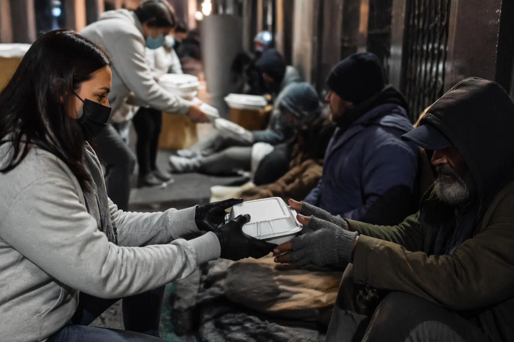
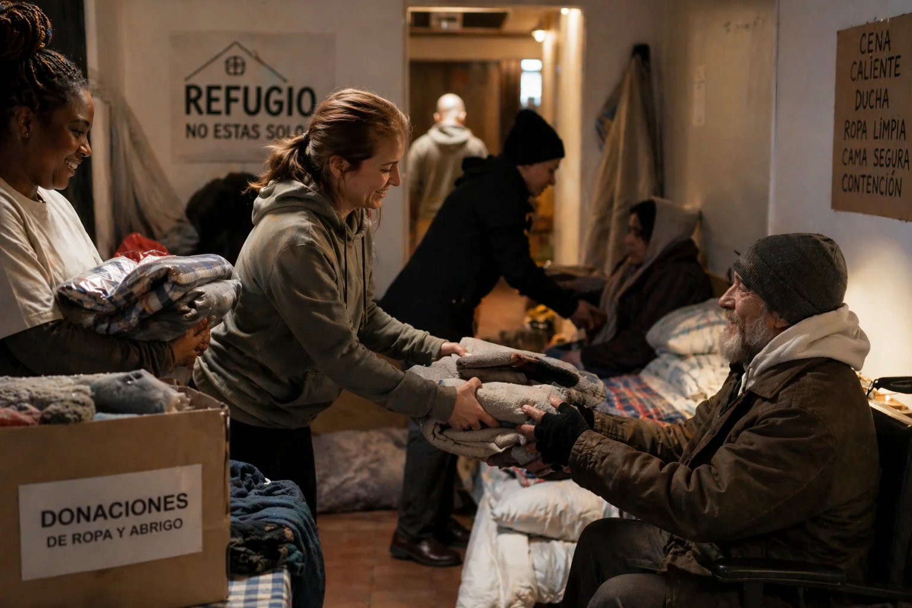
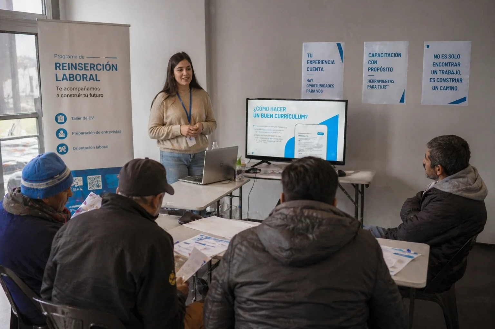
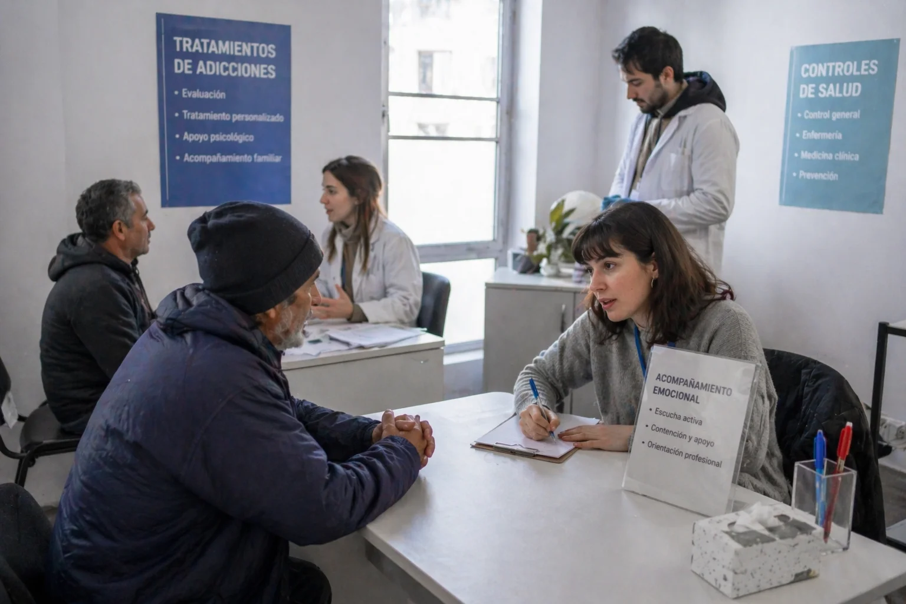

🍲 Comida Solidaria
Ofrecemos comidas calientes, ropa y atención médica básica
a personas en situación de calle. Nuestro equipo de
voluntarios se encarga de brindar apoyo emocional y
acompañamiento durante cada visita.
Nuestros voluntarios recorren distintos puntos de la ciudad
durante el día y la noche, distribuyendo alimentos preparados
con el apoyo de donaciones y organizaciones aliadas.
- + De 200 entregas diarias de viandas
- Distribución de zonas estrategicas
- Participación activa de voluntarios
- Preparación de alimentos con controles básicos de higiene
- Campañas de recolección de alimentos
- Articulación con comedores comunitarios

🤝🏻 Refugio y Contención
Refugio y Contención ofrece un espacio seguro donde
las personas pueden resguardarse, descansar y acceder
a condiciones básicas de higiene. Este programa está
orientado a brindar protección, especialmente durante
la noche y en épocas de bajas temperaturas
Además del alojamiento, se promueve un entorno de respeto y
acompañamiento, donde cada persona es escuchada y contenida
- Alojamiento nocturno
- Duchas y kits de higiene personal
- Entrega de ropa limpia y abrigo
- Espacios seguros durante condiciones climáticas extremas
- Áreas separadas para mayor comodidad y seguridad
- Derivación a otros servicios sociales

💼 Puente al Trabajo
El programa Puente al Trabajo busca generar oportunidades de
inserción laboral para personas en situación de calle,
acompañándolas en su proceso de reintegración social.
Se brindan herramientas prácticas como talleres de formación,
armado de currículum y preparación para entrevistas laborales,
así como también el contacto con empresas que promueven la
inclusión
- Talleres de oficios y capacitación
- Asistencia en armado de CV
- Orientación vocacional
- Desarrollo de habilidades blandas (comunicación, responsabilidad)
- Simulación de entrevistas de trabajo
- Acompañamiento en los primeros meses de empleo
- Contacto con empresas inclusivas

🧠 Rehabilitacion Integral
El programa de Rehabilitación Integral incluye atención
personalizada y seguimiento continuo, adaptándose
a las necesidades de cada participante y respetando
sus tiempos y procesos.
Nos orientamos a acompañar a personas en situación de calle que
atraviesan problemáticas de consumo, salud mental o situaciones de
extrema vulnerabilidad, brindándoles un proceso de
recuperación progresivo y sostenido en el tiempo.
A través de un enfoque interdisciplinario,
se trabaja en la recuperación física, emocional y social
de cada persona, promoviendo su bienestar y favoreciendo
su reintegración a la comunidad y su calidad de vida.
- Acompañamiento psicológico y emocional
- Asistencia en tratamientos de adicciones
- Controles de salud y derivación médica
- Espacios de contención y escucha activa
- Talleres de desarrollo personal y habilidades sociales
- Seguimiento individual en el proceso de reinsersión

¿Cómo podés colaborar?
Existen distintas formas de colaborar con nuestros programas y ayudar a generar
un cambio real en la vida de las personas en situación de calle.
Cada aporte, desde el tiempo hasta los recursos, es fundamental para
sostener nuestras iniciativas.
🧑🤝🧑 Voluntariado
Podés sumarte como voluntario participando como voluntario en la entrega de alimentos,
la organización de actividades o el acompañamiento en los distintos programas. No se requiere
experiencia previa, solo compromiso y ganas de ayudar
🎁 Donaciones
Aceptamos donaciones de alimentos, ropa, productos de higiene y también aportes
económicos que nos permiten sostener y ampliar nuestros programas.
📢 Difusión
Ayudanos a dar a conocer nuestra labor compartiendo nuestras iniciativas
en redes sociales o recomendando nuestro trabajo a otras personas
🤝 Alianzas
Si represtás a una empresa u organización podés colaborar
generando oportunidades laborales, donaciones o apoyando proyectos específicos.
Encontra más información en Contacto. Rellena el
formulario para ayudar junto a nosotros!